Interactive Poster for Pakke Tiger Reserve
In August 2014, I was commissioned to make an interactive poster for the Nature Interpretation Center at Pakke Tiger Reserve, Arunachal Pradesh. For my love of birds I decided to make a poster that can play bird calls on a press of a button, while displaying information about the bird.
Physical specs: The installation is 1m(height) X 2m (width). It is raised from the the ground by 0.75m and is easily accessible to an average height of 4 ft tall viewer.
Content: The birds are categorized by their habitat styles:
_Soaring
_Canopy
_Under storey
_Ground dwelling
_Wetland
Each bird is illustrated with photos and information like IUCN status, latin names etc.
Interaction: The bird call plays when their respective buttons are pressed. The call play is notified with a blinking LED.
Materials: The box is made of wood and the poster is printed on vinyl and acrylic.
This installation was run by a Raspberry Pi processor & 8051 micro-controller

 Block diagram to explain the installation hardware
Block diagram to explain the installation hardware

 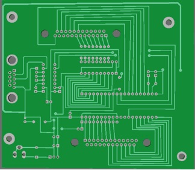
The circuit was designed by Nipan Das and Kunjalata Deka from Syskriation.
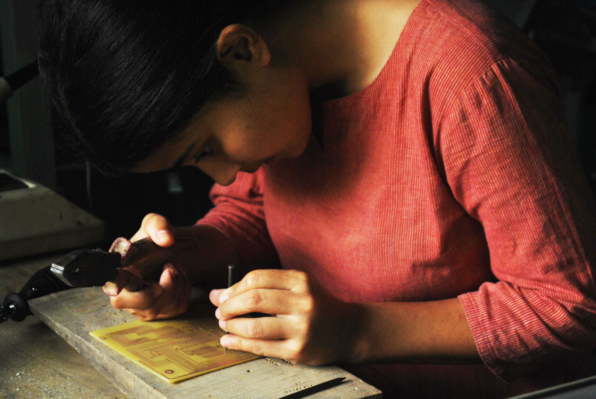
The PCB was made by inverse printing and removing copper coats using Ferric Chloride.
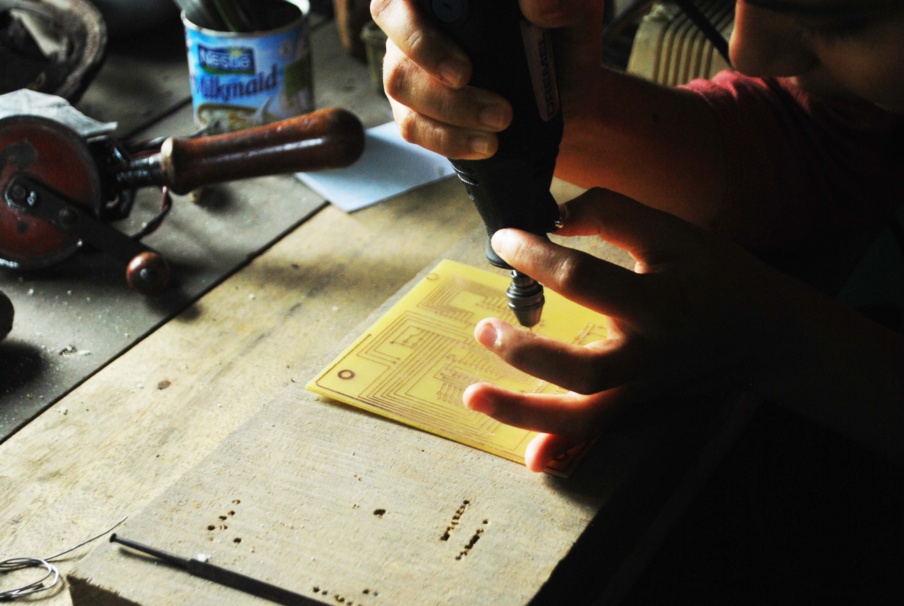
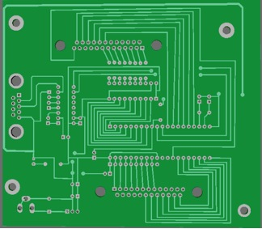
The circuit was designed by Nipan Das and Kunjalata Deka from Syskriation.
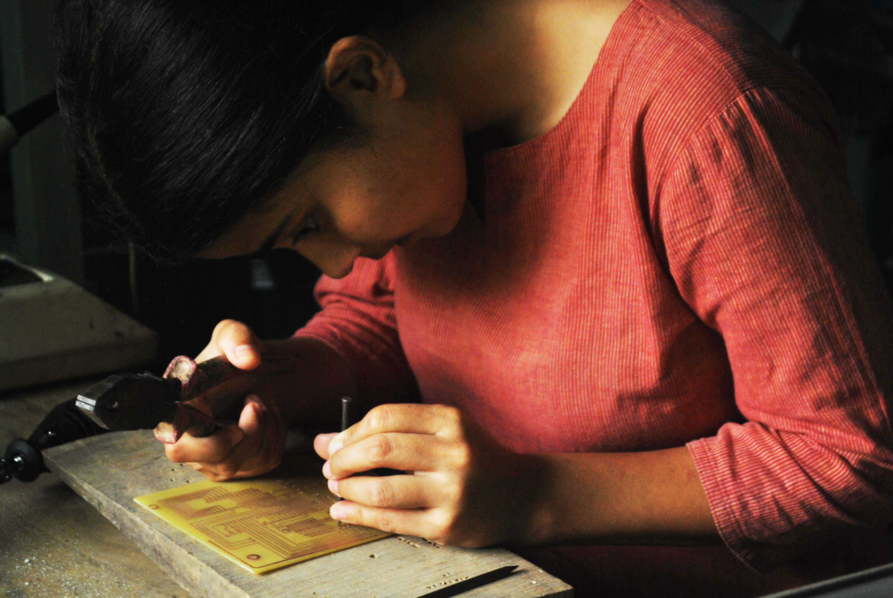
The PCB was made by inverse printing and removing copper coats using Ferric Chloride.
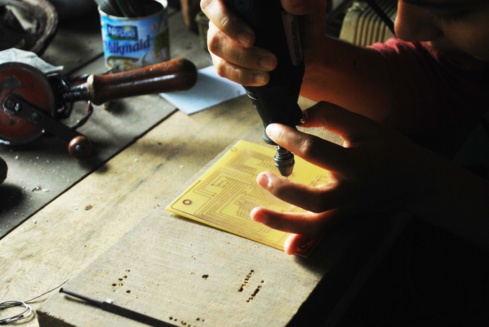
 I assembled the components to the circuit board based on the design.
I assembled the components to the circuit board based on the design.
 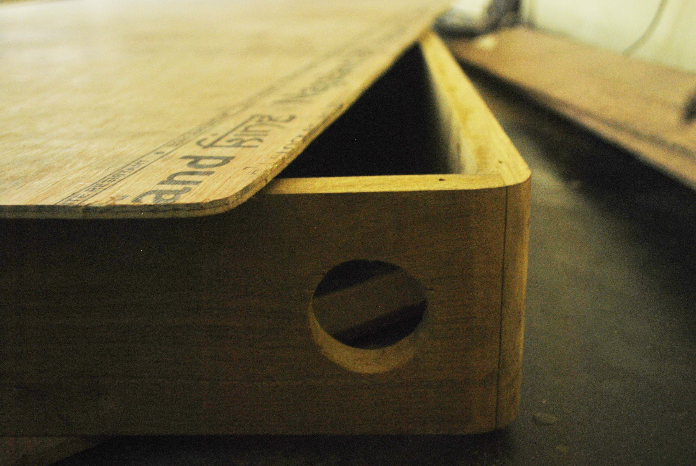
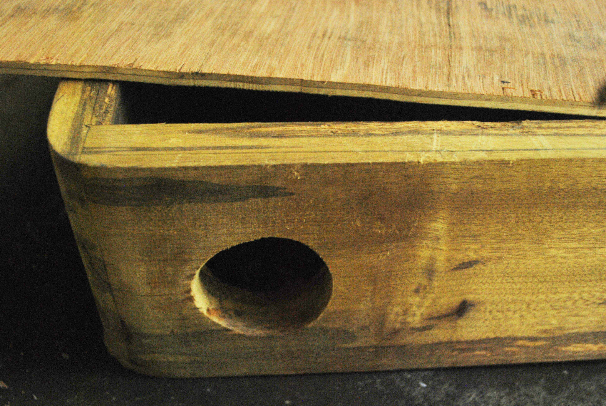
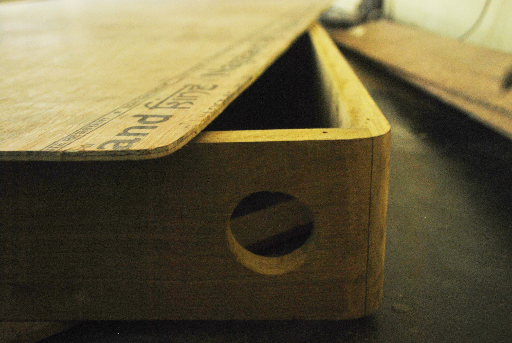
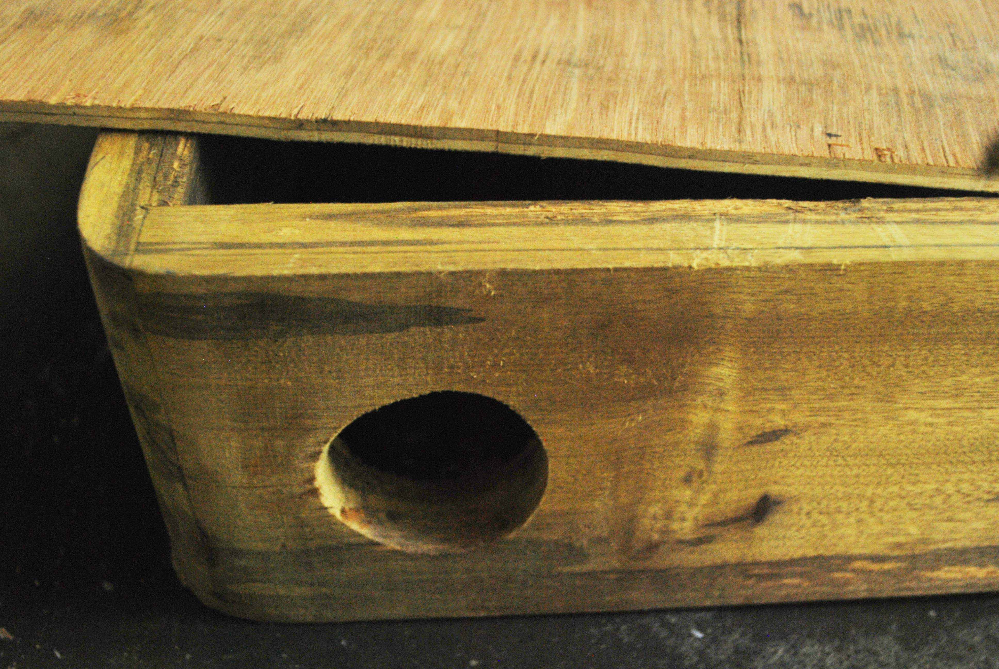
 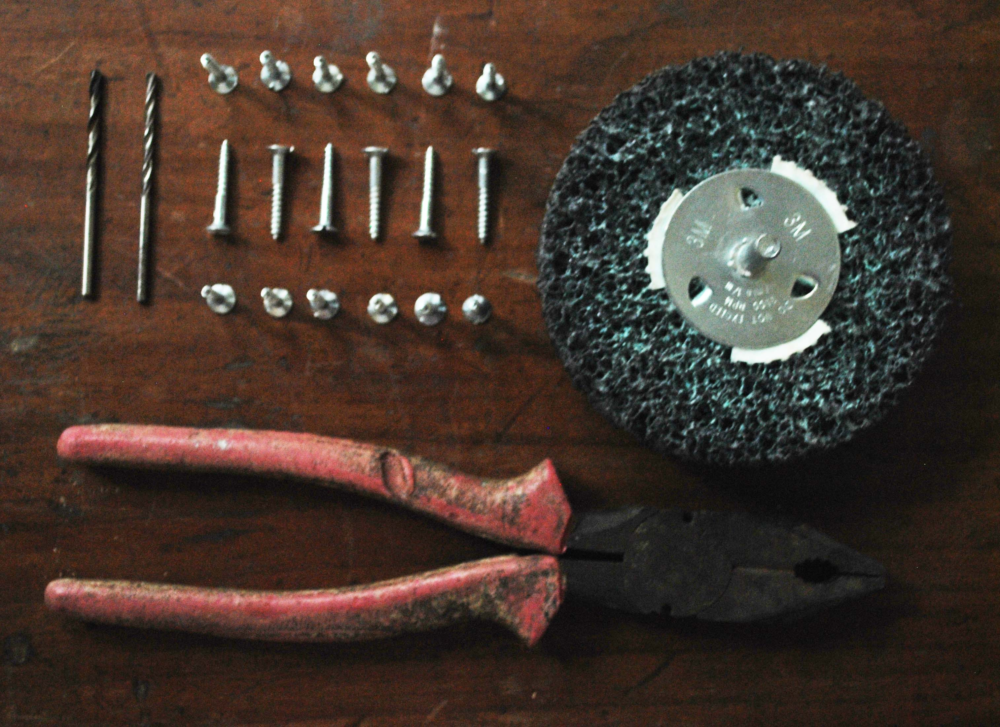
The box was made of wood to merge with the wooden interiors of the NIC hall at Pakke. It had openings for speakers on both sides.
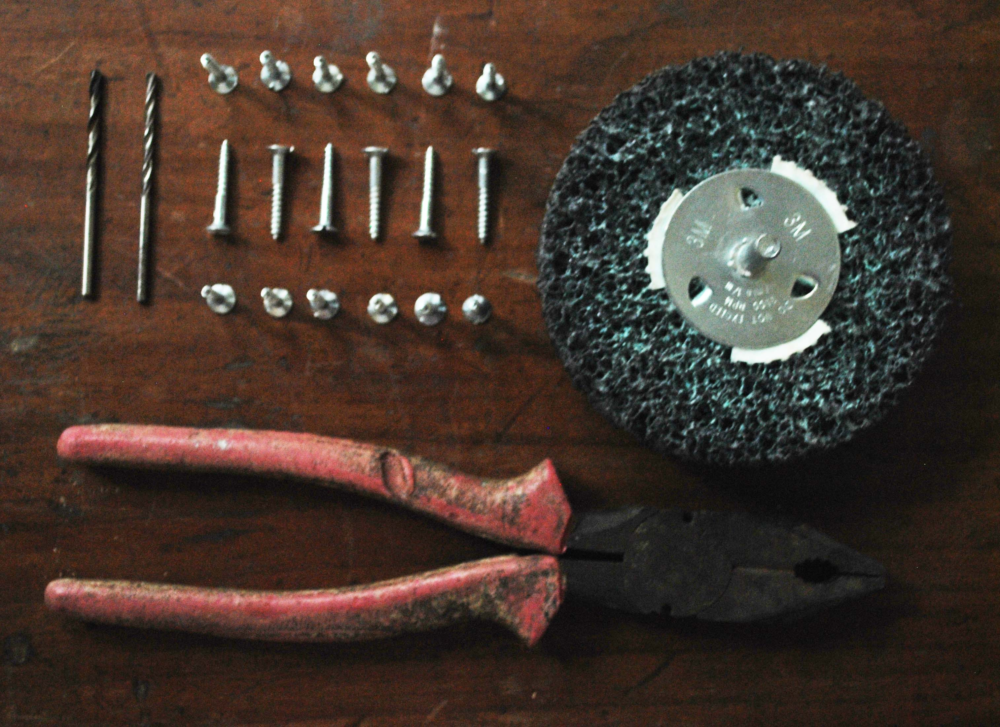
The box was made of wood to merge with the wooden interiors of the NIC hall at Pakke. It had openings for speakers on both sides.
 The Raspberry Pi snuggled up inside the poster.
The Raspberry Pi snuggled up inside the poster.
 In between work, the 60 LED's were tripping out.
In between work, the 60 LED's were tripping out.
 Wiring the matrix keypad and Led matrix.
Wiring the matrix keypad and Led matrix.
 Sealed and officially delivered.
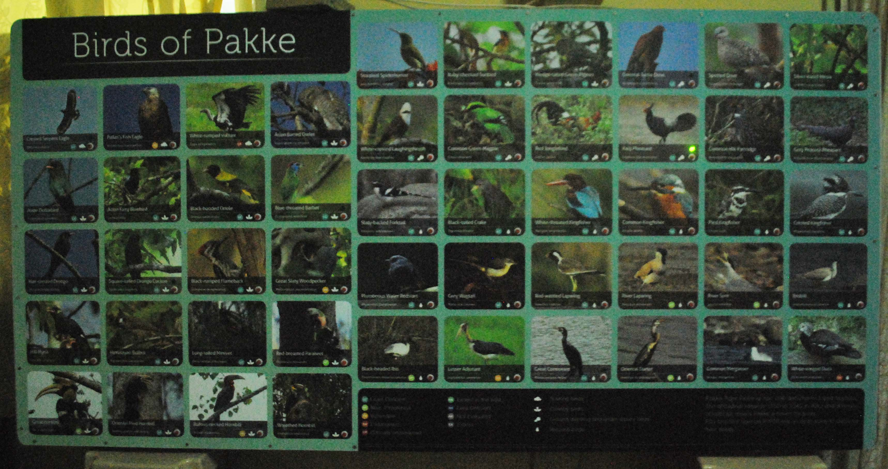
After a lot of handwork the poster was ready to sing. [video]
Sealed and officially delivered.
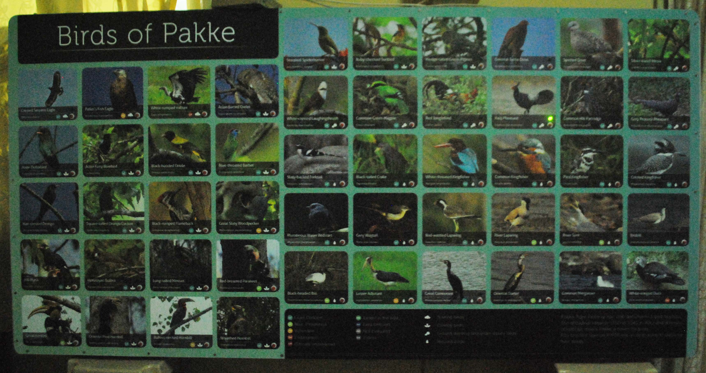
After a lot of handwork the poster was ready to sing. [video]
On the software side I tinkered a bit with the design and made it into a mobile app that could be used to educate amateur bird watchers, entertain wildlife tourist, spread awareness and generate data for the bird database of Pakke Tiger Reserve. It is is demoed here